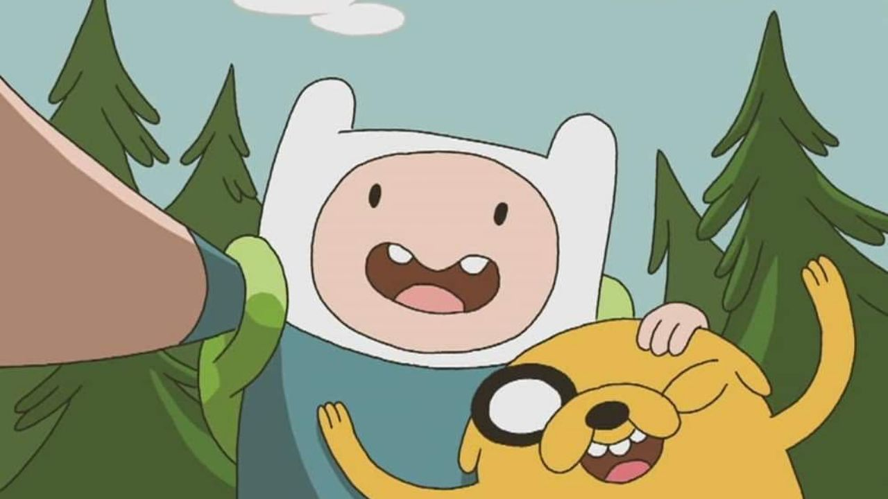
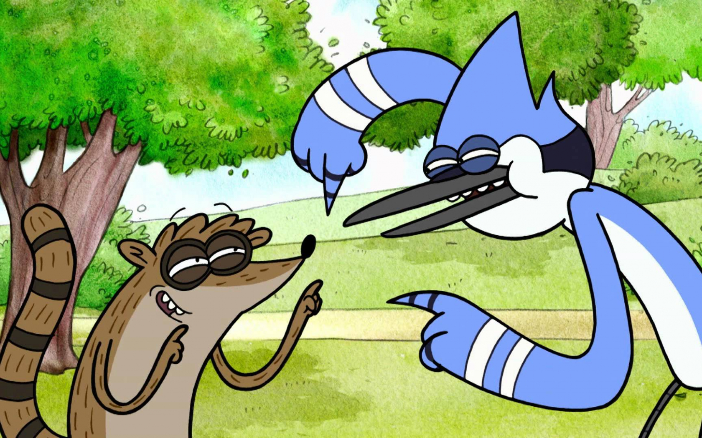
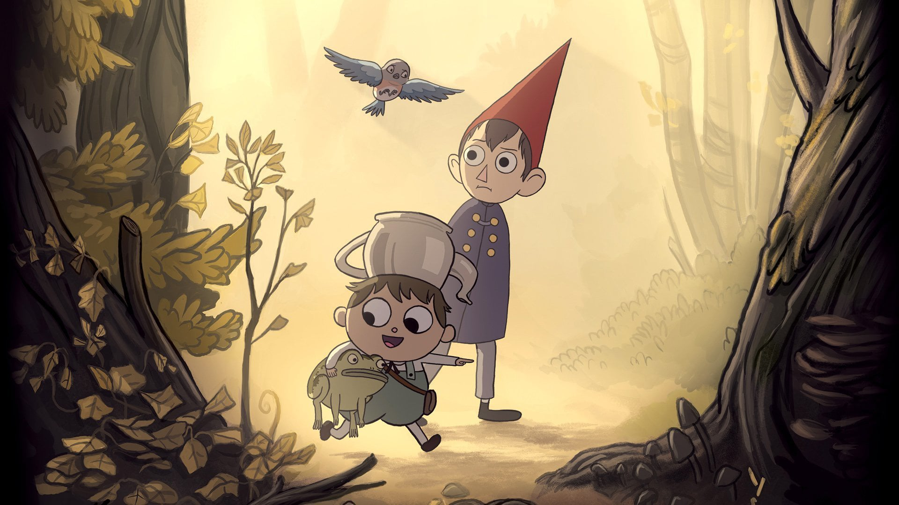

| Hora de Aventura |
- Finn es daltónico
- Finn y Marceline son ambidiestros
- Al igual que Simon y Marceline, Tommy conoce a Olivia desde que era un bebé
- Arcoíris la unicornio, habla coreano
- La dulce princesa también habla alemán
- Finn y Jake aparecen en un episodio de Futurama
- Hay un caracol escondido en cada capítulo
- Marceline tiene un perrito zombie
- Fionna y Cake tienen su propio comic
- Finn sí envejece con el paso del tiempo
|
 |
| Un Show Más |
- Margarita es un petirrojo, sin embargo, solo los petirrojos machos tienen las plumas rojas
- Rigby camina a 2 patas, pero cuando corre va a 4 patas
- No se ha visto a Mordecai morir en la serie, sin embargo, Rigby muere en varios episodios
- Mordecai tiene el pico recto, y Margaret lo tiene un poco curvado
- Se especula que la serie se habita en los años 80
- Papaleta suele pagarlo todo con paletas
- Margaret cambia de novio en muchas ocasiones
|
 |
| Más Alla del Jardin |
Se inspira en el libro "La divina comedia de dante"
-Que representan las capas del infierno
En la serie de clarence
-En el capitulo lil buddy se ve la sombra de Wirt y Gregory
Jason Funderburker
-Su diseño esta inspirado por Patrick McHale |
 |